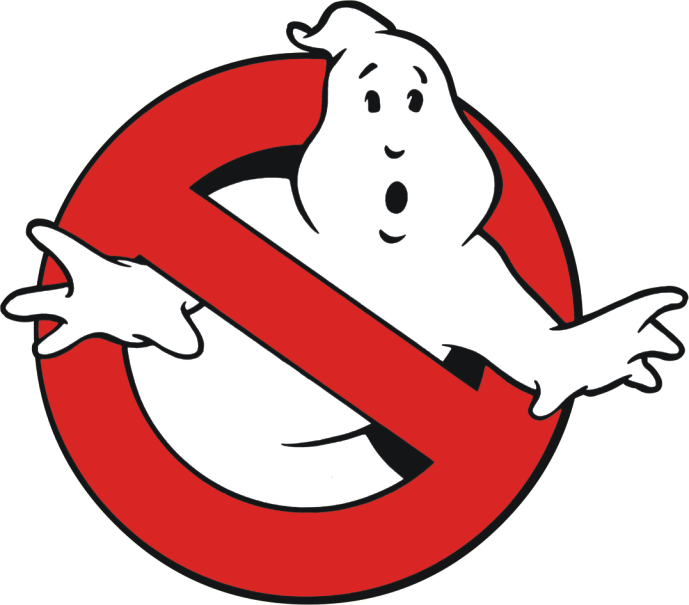

I wanna go away... 👻
A IWAGY é uma empressa brasileira de personalização e confecção de roupas e calçados com o intuito de representar adolescentes excluídos, criado em 2021 por Daniel Diniz, Felipe Pereira, Guilherme Machado e Maria Eduarda de Assis. O principal objetivo da nossa marca é alcançar o público jovem com estampas e desenhos fora do comum, que não se identifique com a moda atual da sociedade.
